Wawa didn't need a better ad. It needed to stop looking like one.
A soap good enough to fix one toddler's skin, with no image worthy of what it actually did. That gap is where Wawa started. Here's the identity I built to close it, and the three paid campaigns it made possible.
Creative Direction · Branding · Campaign · AI Film · 2026
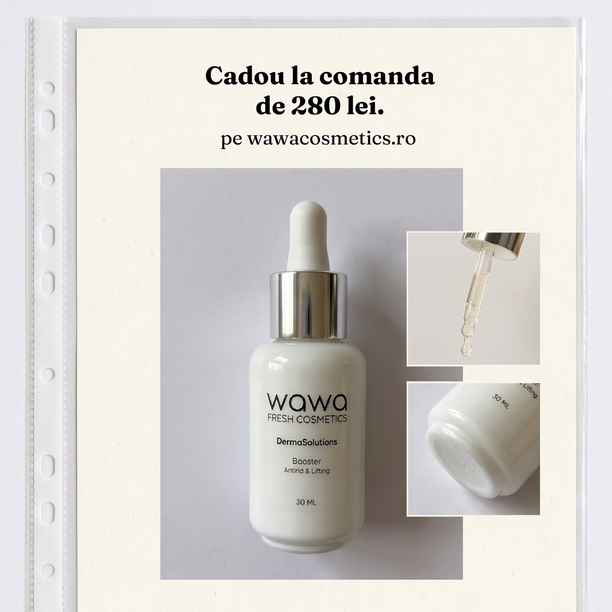
Wawa is a small fresh-cosmetics line out of Romania, made in weekly micro-batches, the way good bread is made rather than the way shelf products are. It didn't start as a business plan. For years, its founder Andrada tried the products specialists recommended for her son's sensitive skin. Some worked, some didn't, but every one of them stopped working the moment she stopped using it. Then, with no real expectations, she bought a simple vegetal soap with a short ingredient list. Within days, his skin was visibly better.
By the time I came in, Wawa had something most young brands don't: a real, provable reason to exist, a founder with an unmistakable voice, and seven honest product colors already out in the world. What it didn't have was a system holding any of it together.
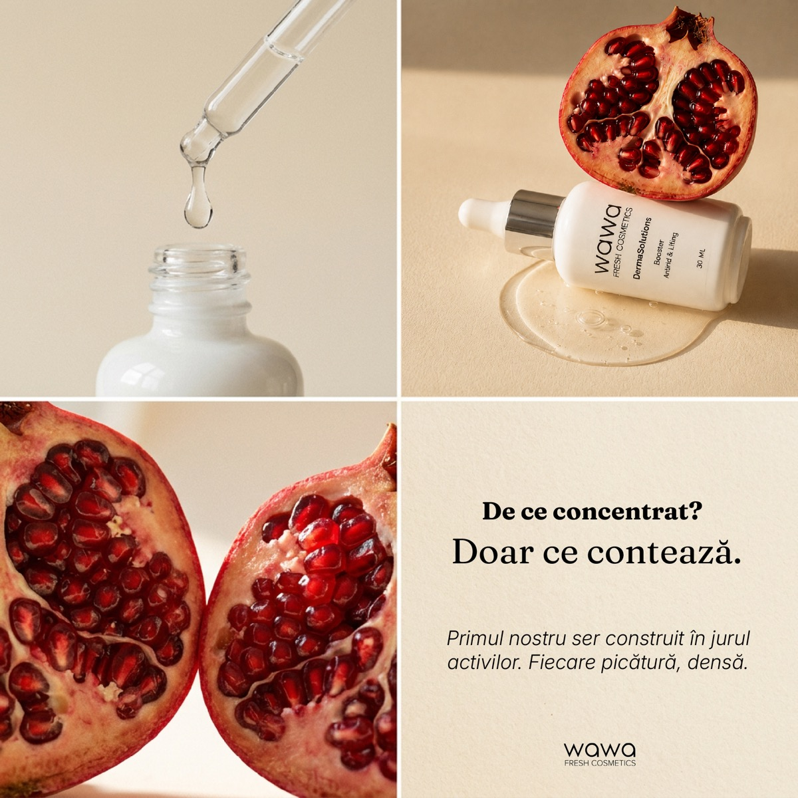
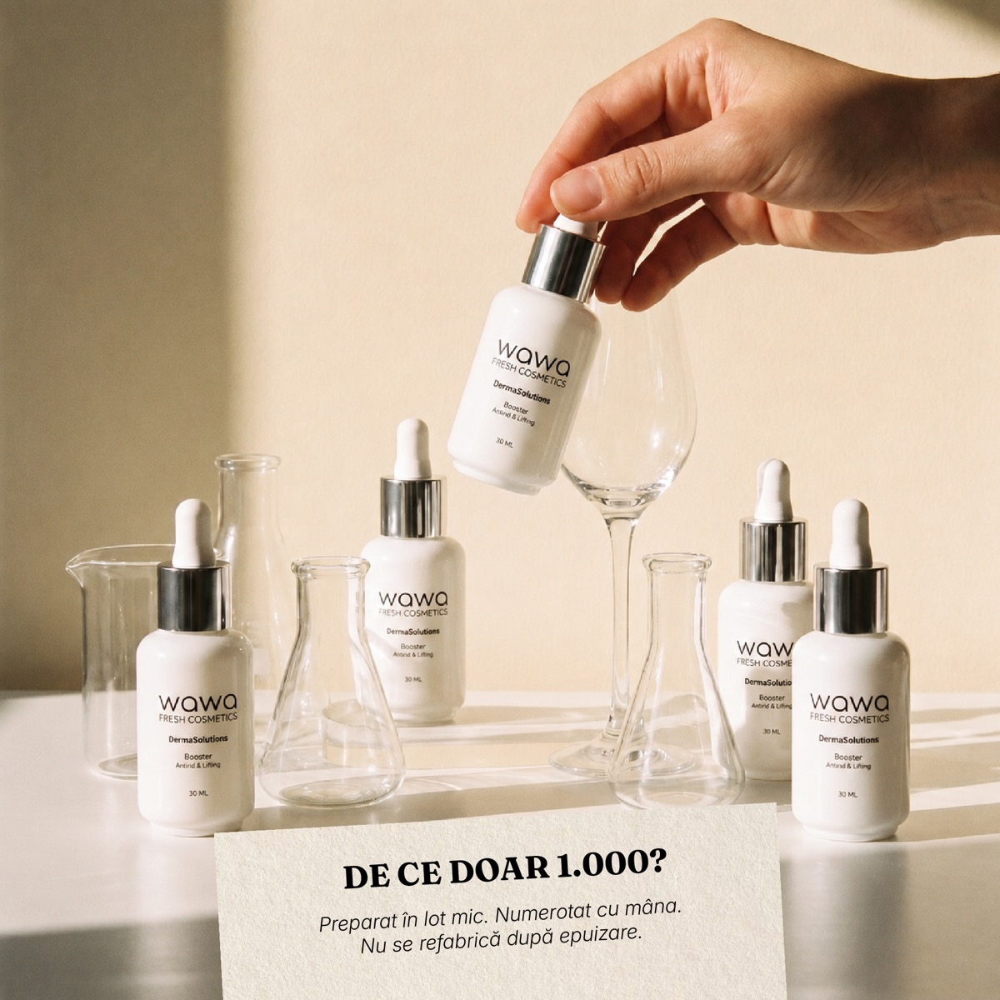
They didn't come to me for ads first. They came because the brand was outgrowing what lived only in Andrada's head. I was brought on to build the identity system underneath Wawa, and once that system existed, it became the foundation for the paid media that came after. I was asked to make the whole brand coherent enough that the ads could finally sound like it.
Seven real colors, zero architecture. Every product had its own palette, decided in the moment. Without rules for how they combined, any new touchpoint risked reading like a pharmacy shelf instead of a considered brand.
The founder's voice was the whole asset, and it lived nowhere. Andrada's way of talking to her customer was Wawa's single biggest differentiator, but it wasn't written down anywhere a designer, copywriter or ad could reference.
The paid creative sounded like every other beauty ad. Urgency, discounts, superlatives: the exact vocabulary that a woman who has read too many labels and tried too many products has learned to distrust on sight.
Content was one-off, not repeatable. Nothing was structured enough to sustain the brand's actual production rhythm. Weekly batches need a content system that can move at the same speed without reinventing itself each time.
“The problem was never his skin. It was what she'd been putting on it.”A system disciplined enough to survive contact with a marketing calendar. Two documents, then one campaign strategy built to inherit both.
A color and type architecture. I coded the seven existing product colors into a chapter system. Black as the brand's spine, three neutral tones as the scene, and every product color assigned a shelf version and a separate, quieter communication version. A strict combination rule, never two chapter colors in one frame without a neutral mediator, is what keeps the range from collapsing into noise.
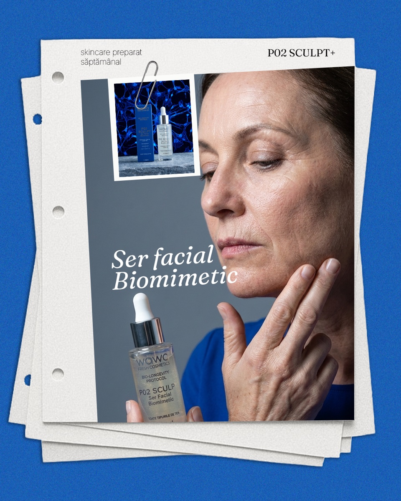
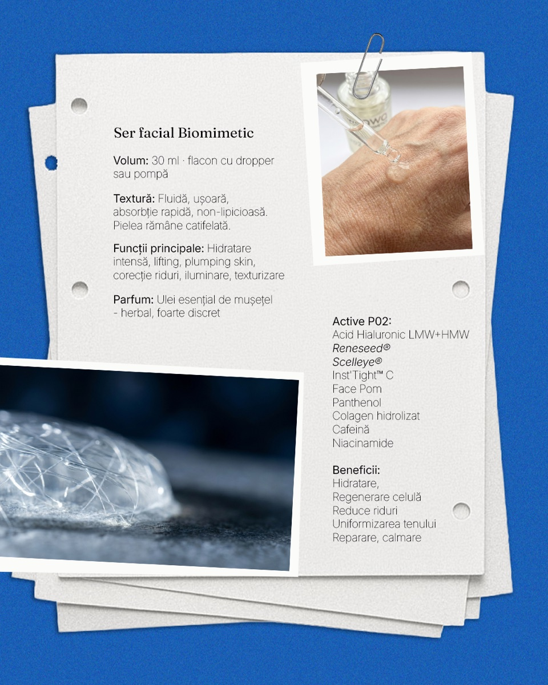
Paid media that reads as editorial, not advertising.
The operating principle for every campaign: an ad should look like an organic post that happened to be targeted. I retired the generic beauty vocabulary (glow, miracle, anti-aging, instant) in favor of Wawa's own, and built creative around the same founder-led, decision-led storytelling the content pillars already established.
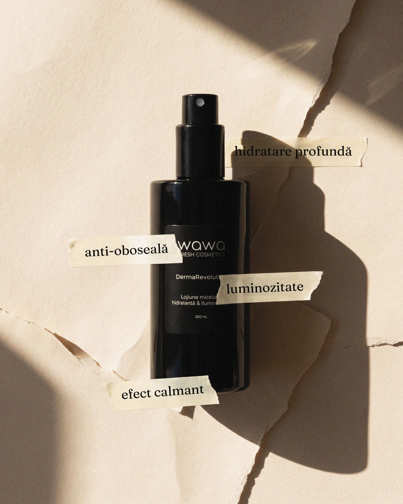
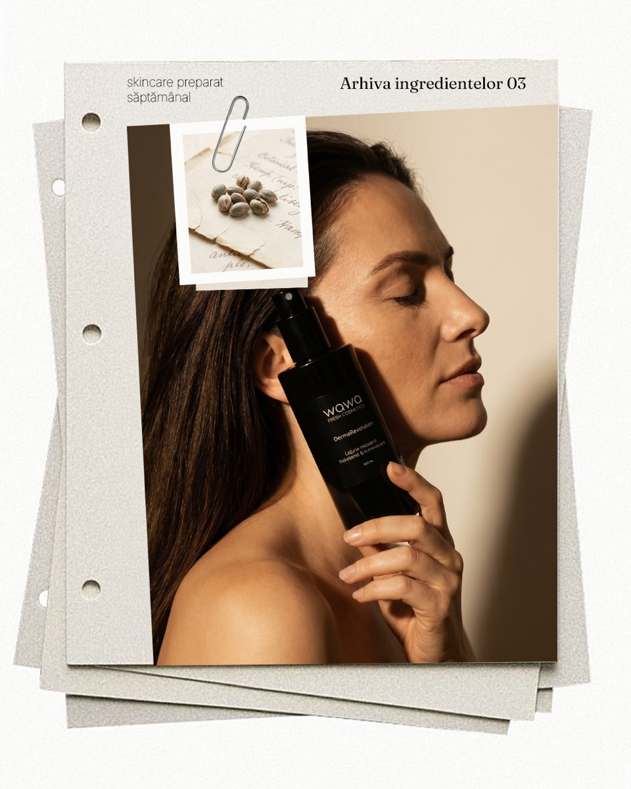
Three campaigns, run on that system.
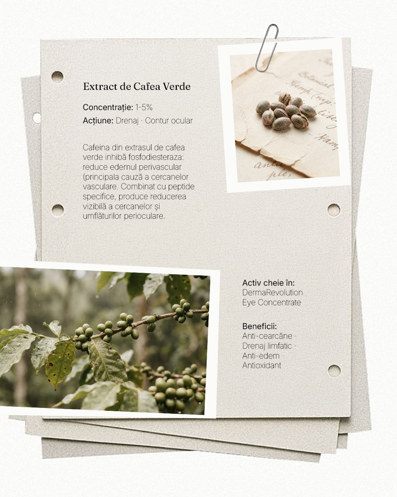
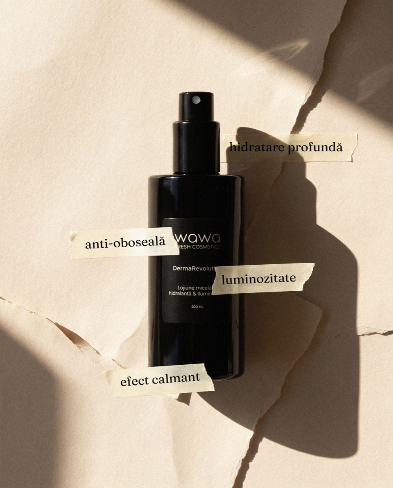
The anniversary campaign outperformed everything that came before it.
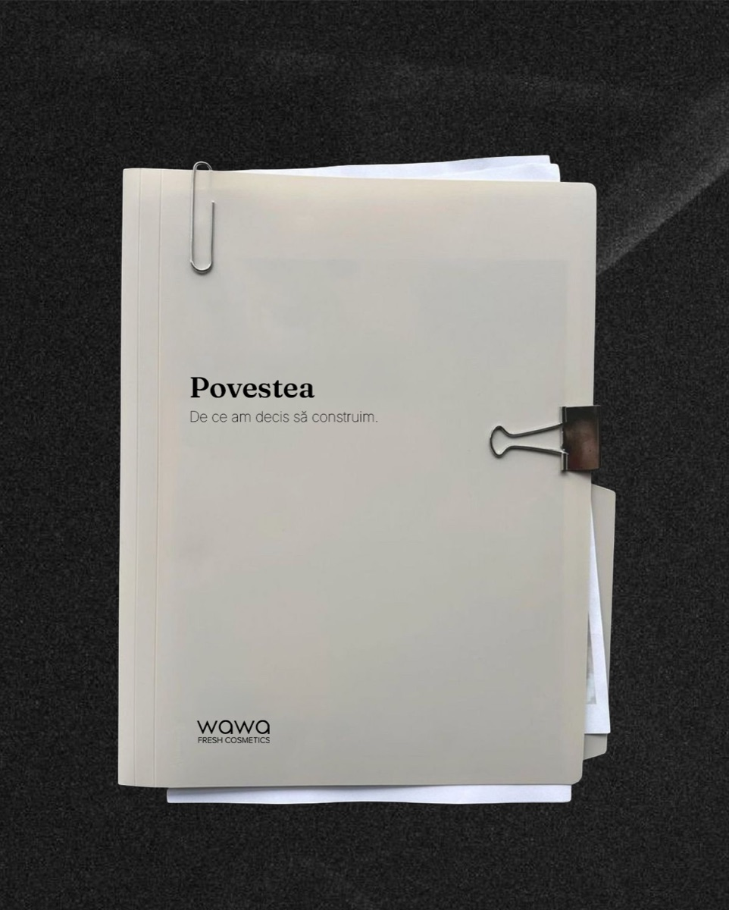
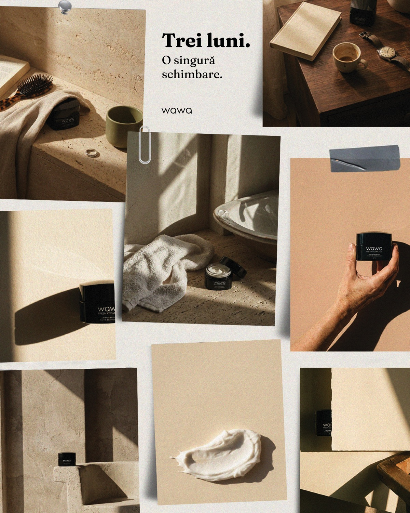